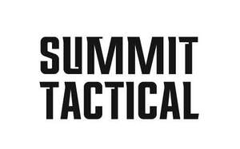

Trade Mark Journal No.2025/021 23 May 2025
UK00004184167 4 April 2025 (9,11,18,20,22,24,25,35)

- Class 9
- Lifesaving signalling and survival apparatus; tactical goggles; protective eyewear and sunglasses; wearable headlamps; night vision equipment; thermal imaging devices; GPS devices; compasses; navigation tools; two-way radios and communication devices; data storage and power banks; body-worn cameras and tactical lights; scientific, nautical, surveying, photographic, cinematographic, optical, weighing, measuring, signalling, checking (supervision), life-saving and teaching apparatus and instruments; Apparatus for recording, transmission or reproduction of sound or images; optical apparatus, rangefinders, and thermal imaging devices for outdoor activities; protective equipment, and communication devices for outdoor tactical or survival scenarios; parts and fittings for the aforesaid.
- Class 11
- Tactical flashlights, headlamps, and lanterns, portable cooking stoves, water purifiers, hydration systems; emergency heating and cooling apparatus; apparatus for lighting, heating, steam generating, cooking, refrigerating, drying, ventilating, water supply and sanitary purposes; gas and electric cookers, cooking stoves, torches, lamps, flashlights, flares, lanterns and parts and fitting; all of the aforesaid for outdoor recreational or survival use; parts and fittings for the aforesaid.
- Class 18
- Tactical backpacks, load-bearing equipment; waterproof bags; dry sack; protective cases’ utility bags; tactical briefcases; trunks and travelling bags; umbrellas, parasols and walking sticks; suitcases, items of luggage, wallets, slings and backpacks, satchels, belts, leather belts, umbrellas, walking poles and mountaineering sticks; parts and fittings for the aforesaid.
- Class 20
- Portable camping furniture; collapsible stools and tables; tactical bivouac shelters; non-metallic modular storage units and gear racks; Bedding, mattresses, pillows, sleeping bags, sleeping mats, cushions, chairs, stools and seats, camp beds, tables, screens [furniture], tent poles and tent pegs, non-metallic locks, non-metallic cylinder locks; parts and fittings for the aforesaid.
- Class 22
- Reinforced and weatherproof tents, tarps and ground sheets; tactical climbing ropes, string, nets, tents, awnings, tarpaulins, sails, sacks and bags (not included in other classes); Padding and stuffing materials (except of rubber or plastics); modular shelter systems; tents, lightweight shelters in the form of tents, ground sheets, tarpaulins, ropes, nets, awnings, hammocks; parts and fittings for the aforesaid.
- Class 24
- Speciality textiles for clothing and equipment covers; thermal blankets; waterproof linings; camouflage netting; microfibre towers and emergency shelters; Textiles and textile goods, not included in other classes; Bed and table covers; travellers rugs, textiles for making articles of clothing, duvets, covers for pillows, covers for duvets, towels and face cloths, mosquito nets; parts and fittings for the aforesaid; all of the aforesaid goods for use in connection with outdoor pursuits.
- Class 25
- Tactical outerwear, jacket and clothing, footwear, headgear; base layers; thermals; insulated gear; camouflage; weatherproof headgear; parts and fittings for the aforesaid; .
- Class 35
- Retail services in relation to outdoor, tactical and survival equipment; consulting services for outdoor activities; online and physical store services in relation to tactical, survival and outdoor goods, Advertising; information and advisory services relating to the aforesaid.
HALO INTERNATIONAL LIMITED
Representative: Proelium Law